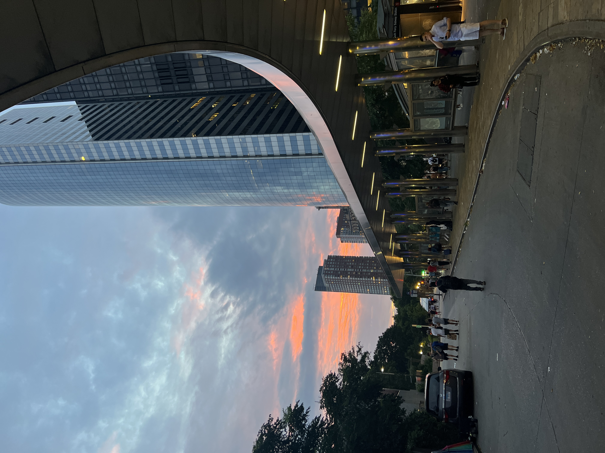
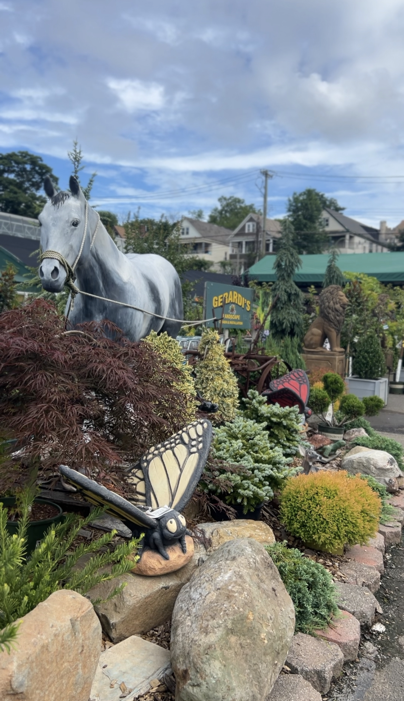
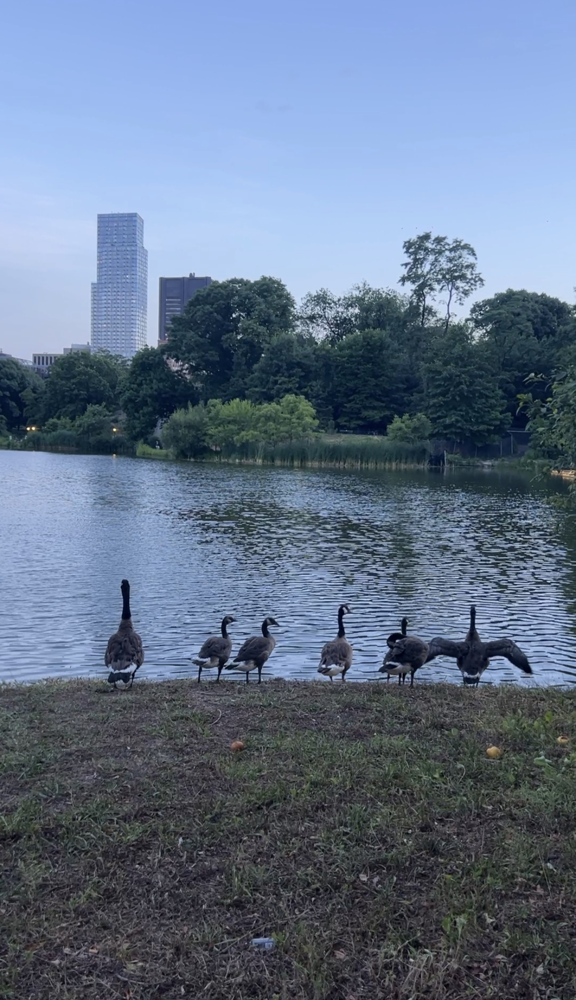
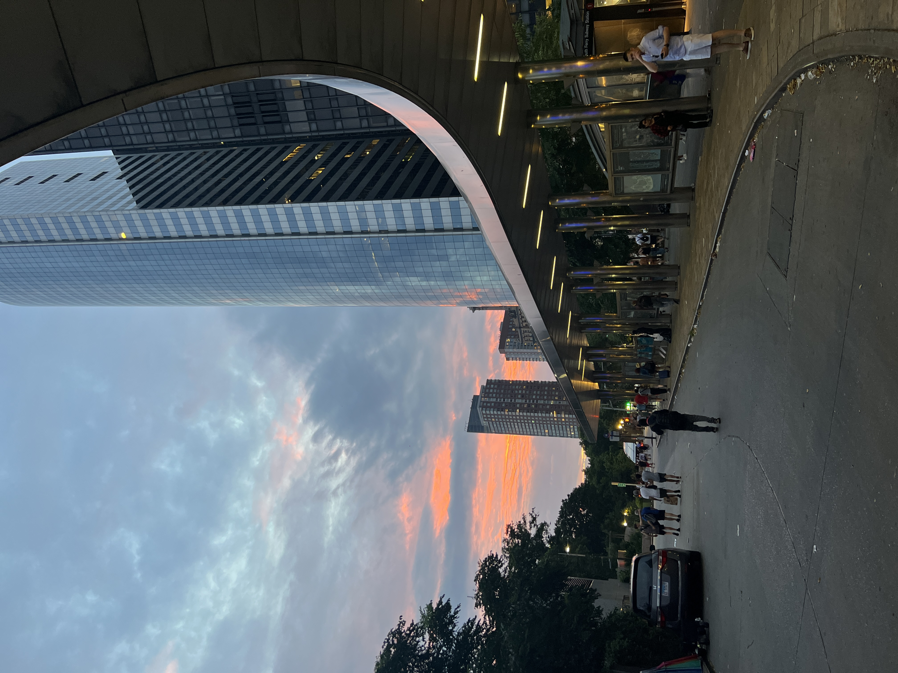
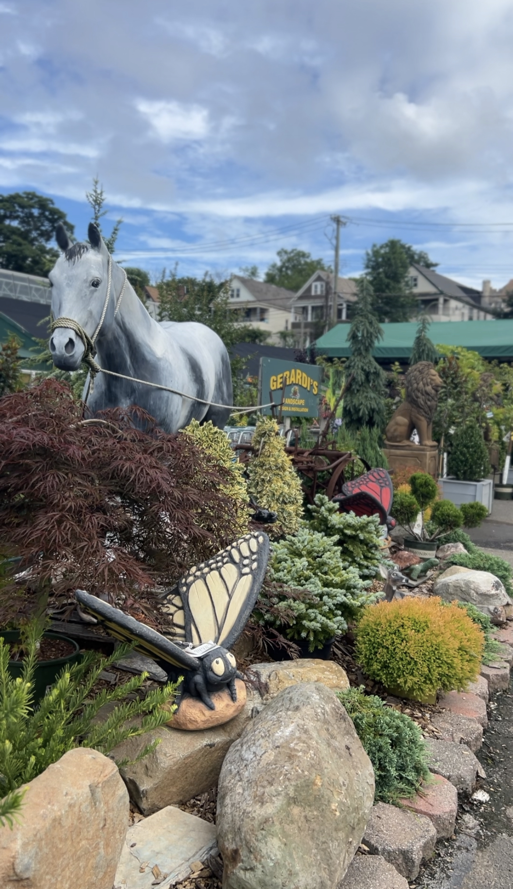
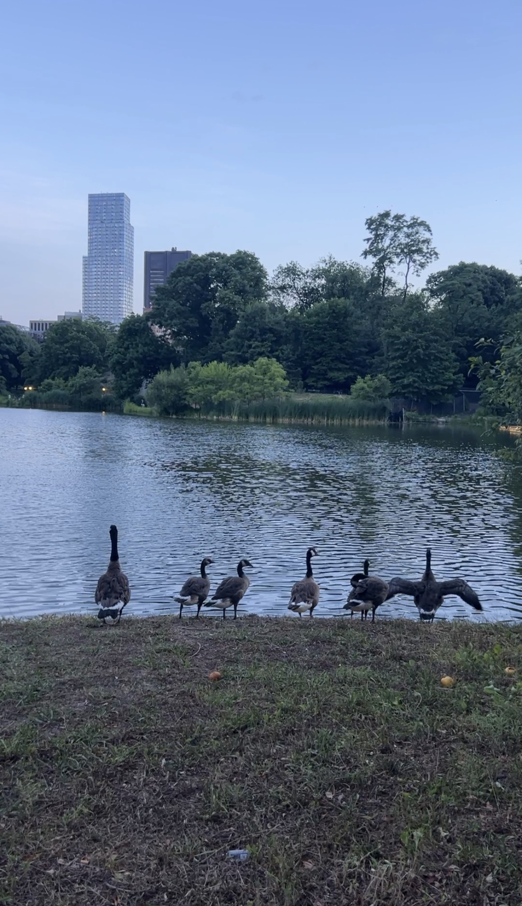

ABOUT ME
Hi! I'm Liz. I'm Vietnamese-American, born and raised in New York City. My hobbies include content creation, jewelry-making, and spending all day on roller coasters! Coding is definitely not one of them. Being a Native New Yorker didn't mean much to me before university, rather, being Vietnamese was the identity I was more proud over. It wasn't until I came to NYU in Abu Dhabi that I started feeling differently about my New Yorker identity and the place I grew up in and now consider home.
More about me: NYU (the one in New York) was my dream university since I was in sixth grade. My decision to go to NYU Abu Dhabi came about while I was searching for ways to go to NYU and NYU Dental School for cheap. That's when I saw a Quora post talking about NYU Abu Dhabi. I thought it was a name of a scholarship. I had no idea there were other NYU campuses! I looked into what NYU Abu Dhabi had to offer and fell in looove. I ended up applying Early Decision I to NYUAD just under a month of knowing about its existence, and I couldn't be happier over being here!
HIGHLIGHTS OF NYC AND AD
 






CONTACT ME
Send me a message below: